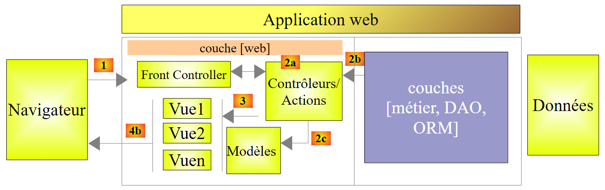
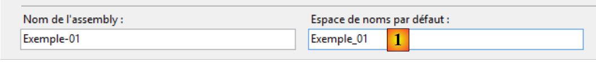
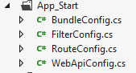
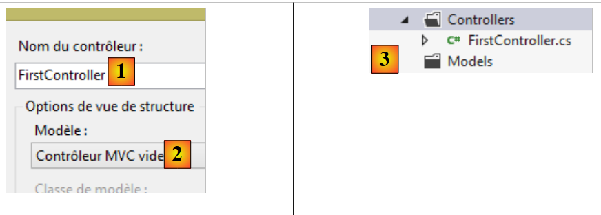

3. کنترلکنندهها، اکشنها، مسیریابی
بیایید معماری یک برنامه ASP.NET MVC را در نظر بگیریم:
 |
در این فصل، فرآیند مسیریابی یک درخواست به کنترلر و اکشنی که آن را پردازش میکند، بررسی میشود؛ سازوکاری که به آن مسیریابی (رووتینگ) گفته میشود. ما همچنین پاسخهای مختلف [3] را که یک اکشن میتواند به مرورگر بازگرداند، تشریح میکنیم. این ممکن است چیزی غیر از یک نمای V [4b] باشد.
3.1. ساختار یک پروژه ASP.NET MVC
بیایید اولین پروژه ASP.NET MVC خود را با استفاده از Visual Studio Express 2012 بسازیم. آن را [1] به راهحلی که در فصل قبلی استفاده شد اضافه خواهیم کرد:
 |
 |
- به عنوان [2]، نام پروژه جدید؛
- و [3, 4]، که برای آن یک پروژهٔ پایهٔ ASP.NET MVC انتخاب خواهیم کرد. این قالب یک برنامه وب خالی در اختیار ما قرار میدهد، اما با تمام منابع (DLL، کتابخانههای JavaScript و غیره) که برای کار نیاز داریم.
پروژهٔ حاصل در [5] نشان داده شده است. ما این [6] را بهعنوان پروژهٔ شروعکنندهٔ برای راهحل انتخاب خواهیم کرد:
 |
نکات زیر باید در [5] مورد توجه قرار گیرند:
- معماری پروژه بازتابدهنده مدل آن MVC است:
- کنترلکنندههای C در پوشه [Controllers] قرار داده خواهند شد،
- مدلهای داده M در پوشه [Models] قرار داده خواهند شد،
- ویوهای V در پوشه [Views] قرار داده خواهند شد،
 |
- در [1]، فایل [Site.css] به عنوان فایل پیشفرض برنامه CSS قرار خواهد گرفت؛
- در [2]، تعدادی کتابخانه جاوااسکریپت در اختیار ما قرار گرفته است؛
- در [3]، سه نمای مشخص وجود دارد: _ViewStart، _Layout و Error.
فایل [_ViewStart] به شرح زیر است:
@{
Layout = "~/Views/Shared/_Layout.cshtml";
}
- خط ۱: کاراکتر @ نشاندهنده یک توالی C# در داخل ویو است. در واقع، میتوان کد C# را در یک ویو گنجاند؛
- خط ۲: متغیر Layout را تعریف میکند که نمای والد همه نماها را مشخص میکند. این متغیر معادل صفحهٔ اصلی (master page) چارچوب استاندارد ASP.NET است.
فایل [_Layout] به شرح زیر است:
<!DOCTYPE html>
<html>
<head>
<meta charset="utf-8" />
<meta name="viewport" content="width=device-width" />
<title>@ViewBag.Title</title>
@Styles.Render("~/Content/css")
@Scripts.Render("~/bundles/modernizr")
</head>
<body>
@RenderBody()
@Scripts.Render("~/bundles/jquery")
@RenderSection("scripts", required: false)
</body>
</html>
وقتی یک ویو از پوشه [Views] رندر میشود، بدنه آن توسط خط ۱۱ بالا رندر خواهد شد. این بدان معناست که ویو نیازی به شامل کردن تگهای <html>، <head> یا <body> ندارد. این تگها توسط فایل فوق فراهم شدهاند. در حال حاضر، این فایل نسبتاً مبهم است. بیایید آن را سادهتر کنیم:
<!DOCTYPE html>
<html>
<head>
<meta charset="utf-8" />
<meta name="viewport" content="width=device-width" />
<title>Tutoriel ASP.NET MVC</title>
</head>
<body>
<h2>Tutoriel ASP.NET MVC</h2>
@RenderBody()
</body>
</html>
- خط ۶: عنوان مشترک برای همهٔ نماها؛
- خط ۹: هدر مشترک برای همه نماها؛
- خط ۱۰: محتوایی که مختص نمای در حال نمایش است.
 |
- [Web.config] فایل پیکربندی وباپلیکیشن است. این فایل پیچیده است. هنگام استفاده از چارچوب [Spring.net] در یک معماری چندلایه، لازم است آن را اصلاح کنید.
- [Global.asax] حاوی کدی است که هنگام راهاندازی برنامه اجرا میشود. به طور کلی، این کد از فایلهای پیکربندی مختلف برنامه، از جمله [Web.config]، استفاده میکند.
3.2. مسیریابی پیشفرض برای URL
کد برای [Global.asax] در حال حاضر به شرح زیر است:
using System.Web.Http;
using System.Web.Mvc;
using System.Web.Optimization;
using System.Web.Routing;
namespace Exemple_01
{
public class MvcApplication : System.Web.HttpApplication
{
protected void Application_Start()
{
...
}
}
}
- خط ۶، namespace برای کلاس. این مستقیماً از نام پروژه مشتق شده و در ویژگیهای پروژه یافت میشود:

 |
ما فضای نام پیشفرض را روی [1] تنظیم میکنیم. سپس این به طور پیشفرض برای تمام کلاسهایی که در پروژه ایجاد میشوند، استفاده میشود.
بیایید به کد مربوط به [Global.asax] بازگردیم:
using System.Web.Http;
using System.Web.Mvc;
using System.Web.Optimization;
using System.Web.Routing;
namespace Exemple_01
{
public class MvcApplication : System.Web.HttpApplication
{
protected void Application_Start()
{
...
}
}
}
- خط ۹: کلاس [MvcApplication] از کلاس [HttpApplication] ارث میبرد. نام [MvcApplication] را میتوان تغییر داد؛
- خط ۱۱: متد [Application_Start] متدی است که هنگام راهاندازی برنامه وب اجرا میشود. این متد تنها یک بار اجرا میشود. در اینجا است که برنامه اولیه میشود.
کد مربوط به [Application_Start] در حال حاضر به شرح زیر است:
protected void Application_Start()
{
AreaRegistration.RegisterAllAreas();
WebApiConfig.Register(GlobalConfiguration.Configuration);
FilterConfig.RegisterGlobalFilters(GlobalFilters.Filters);
RouteConfig.RegisterRoutes(RouteTable.Routes);
BundleConfig.RegisterBundles(BundleTable.Bundles);
}
فعلاً نیازی نیست که تمام این کد را درک کنید. خطوط ۵ تا ۸ مسیرهای پذیرفتهشده توسط وباپلیکیشن را تعریف میکنند. بیایید به معماری یک برنامه ASP.NET MVC بازگردیم:
 |
ما توضیح دادیم که [Front Controller] مسئول مسیریابی یک URL به اکشن مسئول پردازش آن است. یک مسیر برای پیوند دادن یک قالب URL به یک اکشن استفاده میشود. این مسیرها توسط کلاسهای [WebApiConfig, FilterConfig, RouteConfig, BundleConfig] در پوشه [App_Start] پروژه تعریف میشوند:
 |
در حال حاضر، ما تنها به کلاس [RouteConfig] علاقهمند هستیم:
using System.Web.Mvc;
using System.Web.Routing;
namespace Exemple_01
{
public class RouteConfig
{
public static void RegisterRoutes(RouteCollection routes)
{
routes.IgnoreRoute("{resource}.axd/{*pathInfo}");
routes.MapRoute(
name: "Default",
url: "{controller}/{action}/{id}",
defaults: new { controller = "Home", action = "Index", id = UrlParameter.Optional }
);
}
}
}
خطوط ۱۲ تا ۱۶ فرمت فایلهای URL را که توسط برنامه پذیرفته میشوند، تعریف میکنند. به این یک مسیر گفته میشود. ممکن است چندین مسیر (= چندین قالب ممکن URL) وجود داشته باشد. آنها با نام خود (خط ۱۳) از یکدیگر متمایز میشوند. قالب URL برای مسیر در خط 14 تعریف شده است. در اینجا، URL سه جزء خواهد داشت:
- {کنترلکننده}: نام کلاسی مشتقشده از [Controller]. این کلاس در پوشه [Controllers] پروژه جستجو خواهد شد. طبق کنوانسیون، اگر URL برابر با /X/Y/Z باشد، کنترلری که مسئول رسیدگی به این URL است، کلاس XController خواهد بود. پسوند «Controller» به نام کنترلر موجود در URL اضافه میشود؛
- {action}: نام متدی در کنترلر مشخصشده در بالا. این متد پارامترهای همراه با URL را دریافت کرده و آنها را پردازش میکند. این متد ممکن است نتایج مختلفی بازگرداند:
- void: عمل پاسخ را خودِ مرورگر مشتری تولید میکند
- String: عمل یک رشته را به کلاینت بازمیگرداند؛
- ViewResult: یک ویو را به کلاینت بازمیگرداند؛
- PartialViewResult: یک نمای جزئی را بازمیگرداند؛
- EmptyResult: یک پاسخ خالی به کلاینت ارسال میشود؛
- RedirectResult: به کلاینت دستور میدهد که به یک URL هدایت (redirect) شود
- RedirectToRouteResult: مشابه مورد بالا، اما URL از مسیرهای برنامه ساخته شده است؛
- JsonResult: یک پاسخ JSON ارسال میکند
- JavaScriptResult: یک کد جاوااسکریپت را به کلاینت بازمیگرداند؛
- ContentResult: یک فید HTML را بدون عبور از یک ویو به کلاینت بازمیگرداند؛
- FileContentResult: یک فایل را به کلاینت بازمیگرداند؛
- FileStreamResult: مشابه مورد بالا، اما از طریق مسیری متفاوت؛
- FilePathResult: ...
- {id}: پارامتری که به اکشن ارسال میشود. برای اینکه این کار کند، اکشن باید پارامتری به نام 'id' داشته باشد.
خط ۱۵ مقادیر پیشفرض را زمانی تعریف میکند که URL قالب مورد انتظار /{controller}/{action}/{id} را نداشته باشد. همچنین مشخص میکند که پارامتر {id} در URL اختیاری است. در اینجا فهرستی از URLهای ناقص و URL تکمیلشده با مقادیر پیشفرض آورده شده است:
URL اصلی | URL تکمیلشده |
/ | /خانه/شاخص |
/انجام | /Do/Index |
/انجام/چیزی | /انجام/کاری |
/Do/Something/4 | /Do/Something/4 |
/Do/Something/x/y/z | URL مسیریابی نشده |
3.3. ایجاد یک کنترلر و اولین اکشن
بیایید اولین کنترلر خود را بسازیم:
 |
 |
- در [1]، نام کنترلر را به همراه پسوند آن [Controller] وارد کنید؛
- در [2]، یک کنترلر خالی با نام MVC ایجاد کنید؛
- در [3]، آن ایجاد شده است.
کد برای [FirstController] به شرح زیر است:
using System;
using System.Collections.Generic;
using System.Linq;
using System.Web;
using System.Web.Mvc;
namespace Exemple_01.Controllers
{
public class FirstController : Controller
{
//
// GET: /First/
public ActionResult Index()
{
return View();
}
}
}
- خط ۷: یک namespace پیشفرض ایجاد شده است؛
- خط ۹: کلاس [FirstController] از کلاس [System.Web.Mvc.Controller] ارث میبرد؛
- خطوط 14–17: یک اکشن [Index] بهصورت پیشفرض ایجاد شده است. این اکشن عمومی است. این موضوع مهم است؛ در غیر این صورت، پیدا نخواهد شد. این اکشن یک نوع [ActionResult] را بازمیگرداند که یک کلاس انتزاعی است و بیشتر نتایجی که معمولاً توسط یک اکشن بازگردانده میشوند، از آن مشتق شدهاند. این یک نوع «کلی» (catch-all) است که میتوان آن را با جایگزین کردنش با نام واقعی نوع بازگشتی مشخص کرد؛
- خط ۱۶: این متد هیچ کاری انجام نمیدهد. این متد صرفاً یک ویو (view) را بازمیگرداند، یعنی یک نوع [ViewResult]. نام ویو مشخص نشده است. در این مورد، فریمورک در پوشه [Views / First] به دنبال ویویی با نام اکشن میگردد که در این مورد عبارت است از: [Index.cshtml].
بیایید ویوی [Index.cshtml] را ایجاد کنیم:
 |
- در [1]، روی کد اکشن کلیک راست کرده و گزینه [Ajouter une vue] را انتخاب کنید؛
- در [2]، ویزارد یک نما با نامی مشابه با عمل پیشنهاد میدهد. این همان چیزی است که ما اینجا میخواهیم؛
- در [3]، به طور پیشفرض، استفاده از صفحه اصلی [_Layout.cshtml] پیشنهاد میشود؛
- در [4]، پس از تأیید، جادوگر نما را در یک زیرپوشه از پوشه [Views] که به نام کنترلر (First) نامگذاری شده است، ایجاد میکند.
کد تولیدشده برای نما [Index] به شرح زیر است:
@{
ViewBag.Title = "Index";
}
<h2>Index</h2>
- خطوط ۱–۳: کد C# که یک متغیر را تعریف میکند؛
- خط ۵: یک تگ HTML.
تمام کد قبلی را با موارد زیر جایگزین کنید:
<strong>Vue [Index]...</strong>
برای خلاصه کردن:
- ما یک کنترلکننده C به نام [First] داریم؛
- ما یک اکشن به نام [Index] داریم که نمایش یک ویو به نام [Index] را درخواست میکند؛
- ما نمای V [Index] را داریم.
میتوانیم اکشن [Index] را به دو روش فراخوانی کنیم:
- /First/Index;
- /اول، از آنجا که [Index] همچنین اقدام پیشفرض در مسیرها است.
بیایید برنامه (CTRL-F5) را اجرا کنیم. صفحه زیر را دریافت میکنیم:
1

در [1]، URL درخواستی http://localhost:49302 بود. هیچ مسیری وجود ندارد. میدانیم که روتر ما انتظار URL را به شکل /{controller}/{action}/ دارد.{id}. از آنجا که این عناصر وجود ندارند، از مقادیر پیشفرض استفاده میشود. URL به http://localhost:49302/Home/Index تبدیل میشود. کنترلر [Home] وجود ندارد. بنابراین، URL رد میشود.
اکنون بیایید URL http://localhost:49302/First/Index را با تایپ مستقیم آن در مرورگر امتحان کنیم:
 |
صفحه بالا توسط اکشن [Index] از کنترلر [First] تولید شده است. صفحه تولید شده توسط این اکشن، ویو [Index] است که کد آن به شرح زیر بود:
<strong>Vue [Index]...</strong>
این بخش [1] را تولید میکند. در همین حال، بخش [2] از صفحهٔ اصلی [_Layout] میآید که ما کمی پیشتر تعریف کردیم:
<!DOCTYPE html>
<html>
<head>
<meta charset="utf-8" />
<meta name="viewport" content="width=device-width" />
<title>Tutoriel ASP.NET MVC</title>
</head>
<body>
<h2>Tutoriel ASP.NET MVC</h2>
@RenderBody()
</body>
</html>
خط ۹ بخش [2] صفحه را تولید کرد. با این حال، نمای [Index] تنها در خط ۱۰ ظاهر میشود.
اگر کد منبع صفحه دریافتی را مشاهده کنیم، میتوانیم ببینیم که صفحه [Index] در واقع (در خط ۱۰ زیر) در داخل صفحه [Layout] گنجانده شده است:
حال بیایید URL و [/First] را امتحان کنیم:
 |
URL [/First] ناقص بود. این با استفاده از مقادیر پیشفرض مسیر تکمیل شد و به [/First/Index] تبدیل شد. بنابراین ما همان نتیجه قبلی را به دست میآوریم.
3.4. اقدامی با نتیجهای از نوع [ContentResult] - 1
بیایید یک اکشن جدید در کنترلر [First] ایجاد کنیم:
using System.Text;
using System.Web.Mvc;
namespace Exemple_01.Controllers
{
public class FirstController : Controller
{
// فهرست
public ViewResult Index()
{
return View();
}
// Action01
public ContentResult Action01()
{
return Content("<h1>Action [Action01]</h1>", "text/plain", Encoding.UTF8);
}
}
}
اقدام جدید در خطوط 14–18 تعریف شده است. این اقدام به سادگی با استفاده از متد [Content] (خط 16) از کلاس [Controller] (خط 6) یک رشته را بازمیگرداند. پارامترهای این متد عبارتند از:
- رشتهٔ کاراکتری پاسخ؛
- یک نشانگر از نوع متن ارسالشده: "text/plain"، "text/html"، "text/xml"، ... این شاخص به عنوان نوع MIME (http://fr.wikipedia.org/wiki/Type_MIME) شناخته میشود؛
- پارامتر سوم برای مشخص کردن نوع رمزگذاری متن استفاده میشود.
به جای استفاده از نوع انتزاعی [ActionResult]، متدهای ما نوع واقعی رندر شده را مشخص میکنند (خطوط ۹ و ۱۴).
بیایید URL را [/First/Action01] بنامیم. صفحه زیر را دریافت میکنیم:
 |
بیایید کد منبع صفحه دریافتشده را بررسی کنیم:
مرورگر تنها متنی را که توسط اقدام ارسال شده دریافت کرده و هیچ چیز دیگری نه. این حالت زمانی مفید است که بخواهید دادههای خام را از سرور وب بدون پوشش HTML درخواست کنید. توجه کنید که مرورگر تگ را تفسیر نکرد. برای فهمیدن دلیل، بیایید نگاهی به مبادلات HTTP در کروم بیندازیم:
مرورگر سربرگهای زیر را ارسال کرد:
سرور با سربرگهای زیر پاسخ داد:
- خط ۳: نوع سند را مشخص میکند. میتوانیم ویژگیهای تنظیمشده در روش [Action01] را ببینیم. دلیل اینکه مرورگر تگ موجود در سند دریافتی را تفسیر نکرد، این است که به آن گفته شده سند از نوع 'text/plain' است نه 'text/html'.
3.5. اقدامی با نتیجهای از نوع [ContentResult] - 2
بیایید اقدام سوم زیر را در نظر بگیریم:
using System.Text;
using System.Web.Mvc;
namespace Exemple_01.Controllers
{
public class FirstController : Controller
{
...
// Action02
public ContentResult Action02()
{
string data = "<action><name>Action02</name><description>renvoie un texte XML</description></action>";
return Content(data, "text/xml", Encoding.UTF8);
}
}
}
- خط ۱۲: ما یک متن XML را تعریف میکنیم؛
- خط ۱۳: این به مرورگر ارسال میشود و مشخص میکند که XML با نوع MIME "text/xml" است.
در مرورگر، صفحه زیر نمایش داده میشود:
 |
بیایید پاسخ HTTP سرور را در کروم بررسی کنیم:
- خط ۳: نوع سند را مشخص میکند. ما میتوانیم ویژگیهای تنظیمشده در متد [Action02] را ببینیم؛
- خط ۱۲: اندازه سند ارسالشده توسط سرور به بایت.
سند ارسالشده توسط سرور به شرح زیر است (تصویر صفحهٔ کروم):
 |
3.6. اقدامی با نتیجه از نوع [JsonResult]
بیایید اقدام زیر را به کنترلر [First] اضافه کنیم:
// Action03
public JsonResult Action03()
{
dynamic personne = new ExpandoObject();
personne.nom = "someone";
personne.age = 20;
return Json(personne,JsonRequestBehavior.AllowGet);
}
- خط ۴: یک متغیر از نوع dynamic. در زمان اجرا، میتوان به راحتی به چنین متغیری ویژگی افزود. ویژگی همزمان با مقداردهی اولیه ایجاد میشود؛
- خطوط ۵–۶: دو ویژگی، nom و age، مقداردهی اولیه میشوند؛
- خط ۷: نمای JSON (نمایش شیء در جاوااسکریپت) شیء را بازمیگرداند. JSON امکان سریالسازی یک شیء به یک رشته و بالعکس، دسریالسازی یک رشته به یک شیء را فراهم میکند. این جایگزین روش سریالسازی/دسریالسازی XML است؛
- خط ۲: این عمل یک نوع [JsonResult] را بازمیگرداند. این نوع تنها در پاسخ به یک درخواست POST قابل بازگشت است. اگر میخواهید آن را برای متد GET بازگردانید، باید پارامتر دوم سازنده کلاس Json (خط ۷) را روی مقدار JsonRequestBehavior.AllowGet تنظیم کنید.
هنگام درخواست URL [/First/Action03]، مرورگر موارد زیر را نمایش میدهد:
 |
پاسخ سرور، HTTP، به شرح زیر است:
- خط ۳: مشخص میکند که سند ارسالی JSON است؛
- خط ۱۰: سند ارسالی ۵۸ بایت طول دارد. به شرح زیر است:
عنصر پویا [personne] از دیدگاه JSON به صورت آرایهای از فرهنگلغتها در نظر گرفته میشود، که در آن هر فرهنگلغت:
- مطابقت دارد با یک فیلد در متغیر [personne];
- دو کلید دارد: «Key» و «Value». مقدار مرتبط با «Key» نام فیلد و مقدار مرتبط با «Value» مقدار فیلد است.
3.7. اقدامی با نتیجهای از نوع [string]
بیایید اقدام زیر را به کنترلر [First] اضافه کنیم:
// اقدام ۰۴
public string Action04()
{
return "<h3>Contrôleur=First, Action=Action04</h3>";
}
وقتی URL [/First/Action04] را با کروم درخواست میکنیم، پاسخ زیر را دریافت میکنیم:
 |
میتوانیم ببینیم که تگ تفسیر شده است. بیایید نگاهی به پاسخ سرور HTTP بیندازیم:
و سند زیر:
در خط ۳، میبینیم که سرور اشاره کرده است که متنی را در قالب HTML ارسال میکند. به همین دلیل است که مرورگر تگ را تفسیر کرد. بنابراین، هنگامی که میخواهید متن ساده ارسال کنید، ترجیحاً باید یک [ContentResult] بازگردانید تا یک [string]. فرمت [ContentResult] به ما امکان میدهد نوع MIME «text/plain» (MIME) را مشخص کنیم تا نشان دهیم در حال ارسال متن بدون قالببندی هستیم، که مرورگر تلاش نخواهد کرد آن را تفسیر کند.
3.8. عملی با نتیجهای از نوع [EmptyResult]
عمل جدید زیر را در نظر بگیرید:
// Action05
public EmptyResult Action05()
{
return new EmptyResult();
}
این اقدام به سادگی یک نوع [EmptyResult] را بازمیگرداند. در این مورد، سرور یک پاسخ خالی به کلاینت ارسال میکند، همانطور که در پاسخ آن HTTP نشان داده شده است:
- خط ۹: سرور به کلاینت خود اطلاع میدهد که یک سند خالی ارسال میکند.
3.9. عمل با نتیجهای از نوع [RedirectResult] - 1
عمل جدید زیر را در نظر بگیرید:
// اقدام06
public RedirectResult Action06()
{
return new RedirectResult("/First/Action05");
}
این عمل یک نوع [RedirectResult] را بازمیگرداند. این نوع برای ارسال یک دستور هدایت به مشتری به پارامتر سازنده URL (خط ۴) استفاده میشود. سپس کلاینت یک درخواست جدید، GET، را به [/First/Action05] ارسال میکند. بنابراین کلاینت در مجموع دو درخواست ارسال میکند.
مرورگر نتیجه درخواست دوم را نمایش میدهد:
 |
بیایید پاسخ سرور HTTP را در کروم بررسی کنیم:
 |
همانطور که در بالا نشان داده شده است، اینها دو درخواست از مرورگر هستند. بیایید اولین درخواست، [Action06] را بررسی کنیم. پاسخ سرور، HTTP، به شرح زیر است:
- خط ۱: سرور با کد وضعیت 302 Found پاسخ داده است. قبلاً، این کد 200 OK بود که به معنای یافتن سند درخواستشده است. کد 302 نشان میدهد که یک هدایت (redirect) لازم است. آدرس هدایت در خط ۴ داده شده است. این آدرس با آدرسی که ما در کد اقدام مشخص کرده بودیم مطابقت دارد؛
- خط ۱۱: سرور نشان میدهد که با پاسخ خود HTTP، در حال ارسال یک سند از نوع text/html (خط ۳) با اندازهای برابر با ۱۳۲ بایت (خط ۱۱) است. وقتی پاسخ به درخواست [Action06] را در کروم بررسی میکنیم، خالی است، همانطور که انتظار میرود. احتمالاً توضیحی برای این موضوع وجود دارد، اما من نمیدانم چیست.
به دلیل تغییر مسیر، مرورگر یک درخواست جدید، GET، به URL که در خط ۴ بالا مشخص شده است، ارسال میکند، همانطور که در خط ۱ زیر در کروم قابل مشاهده است:
3.10. عملی با نتیجهای از نوع [RedirectResult] - 2
بیایید اقدام جدید زیر را در نظر بگیریم:
// Action07
public RedirectResult Action07()
{
return new RedirectResult("/First/Action05",true);
}
در خط ۴، یک پارامتر دوم از نوع [RedirectResult] به سازنده اضافه شده است. این یک مقدار بولی است که به طور پیشفرض روی false تنظیم شده است. وقتی این مقدار روی true تنظیم شود، پاسخ HTTP که به کلاینت ارسال میشود تغییر میکند. به این صورت درمیآید:
بنابراین، کد پاسخ ارسالشده به کلاینت اکنون 301 Moved Permanently (موقتاً جابجا شده به طور دائم) است. هدایت همانند قبل انجام میشود، اما مشخص میشود که این هدایت دائمی است. این امر به موتورهای جستجو اجازه میدهد تا URL قدیمی را در نتایج خود با نسخه جدید جایگزین کنند.
3.11. اقدامی با نتیجه از نوع [RedirectToRouteResult]
اقدام جدید زیر را انجام دهید:
// Action08
public RedirectToRouteResult Action08()
{
return new RedirectToRouteResult("Default",new RouteValueDictionary(new {controller="First",action="Action05"}));
}
- خط ۲: عمل یک نوع [RedirectToRouteResult] را بازمیگرداند. این نوع به کلاینت اجازه میدهد تا به یک URL مشخصشده نه با یک رشته کاراکتری مانند قبل، بلکه با یک مسیر، هدایت شود.
مسیرها در [App_Start/RouteConfig] تعریف شدهاند. در حال حاضر تنها یک مورد وجود دارد:
routes.MapRoute(
name: "Default",
url: "{controller}/{action}/{id}",
defaults: new { controller = "Home", action = "Index", id = UrlParameter.Optional }
);
- در خط ۴، به کلاینت دستور داده میشود که به مسیر با نام [Default] با متغیر `controller=First` و متغیر `action=Action05` هدایت (redirect) شود. سیستم مسیریابی سپس مسیر هدایت URL را از /First/Action05 تولید میکند. این موضوع در پاسخ سرور HTTP نشان داده شده است:
- خط ۱: هدایت مجدد؛
- خط ۴: آدرس هدایت تولیدشده توسط سیستم مسیریابی URL.
3.12. عملی با نتیجهای از نوع [void]
عمل جدید به شرح زیر باشد:
// Action09
public void Action09()
{
string nom = Request.QueryString["nom"] ?? "inconnu";
Response.AddHeader("Content-Type", "text/plain");
Response.Write(string.Format("<h3>Action09</h3>nom={0}", nom));
}
- خط ۲: عمل هیچ نتیجهای بر نمیگرداند. این مستقیماً در جریان پاسخ ارسالشده به کلاینت نوشته میشود؛
- خط ۴: هر پارامتری با نام [nom] از درخواست بازیابی میشود. این از طریق خاصیت [Request] کنترلکننده [Controller]، که کنترلکننده [First] از آن ارث میبرد، قابل دسترسی است. پارامتر [nom] که در قالب [/First/Action09?nom=quelquechose] ارسال شده است، در Request.QueryString["nom"] در دسترس است. نحو خط ۴ معادل است با:
- خط ۵: پاسخ ارسالشده به کلاینت از طریق خاصیت [Response] کنترلکننده [Controller]، که کنترلکننده [First] از آن ارث میبرد، قابل دسترسی است؛
- خط ۵: هدر HTTP [Content-Type] تنظیم میشود که نوع سندی را مشخص میکند که سرور قصد ارسال آن را به کلاینت دارد. در اینجا، 'text/plain' نشان میدهد که سند یک متن ساده است که نباید توسط مرورگر تفسیر شود؛
- خط ۶: یک رشته از کاراکترها در جریان پاسخ نوشته میشود. این شامل برچسبهای HTML است که نباید توسط مرورگر تفسیر شوند، زیرا مرورگر قبلاً هدر HTTP [Content-Type : text/plain"] را دریافت کرده است. این همان چیزی است که میخواهیم بررسی کنیم.
بیایید پروژه را کامپایل کرده و URL [/First/Action09?nom=someone ][1] را درخواست کنیم، سپسURL [/First/Action09 ] [2]:
 |
حال پاسخ سرور، HTTP، را در کروم بررسی میکنیم:
- خط ۳: ما هدر HTTP را میبینیم که خودمان در کد اکشن آن را تنظیم کردهایم.
3.13. یک کنترلر دوم
بیایید یک کنترلر دوم در پروژه ایجاد کنیم. ما روش توصیفشده در بخش ۳.۱، صفحهٔ ۴۰ را دنبال خواهیم کرد. آن را [Second] نامگذاری خواهیم کرد.
 |
کد تولیدشده آن به شرح زیر است:
namespace Exemple_01.Controllers
{
public class SecondController : Controller
{
//
// GET: /Second/
public ActionResult Index()
{
return View();
}
}
}
بیایید آن را به شرح زیر اصلاح کنیم:
using System.Text;
using System.Web.Mvc;
namespace Exemple_01.Controllers
{
public class SecondController : Controller
{
// /Second/Action01
public ContentResult Action01()
{
return Content("Contrôleur=Second, Action=Action01", "text/plain", Encoding.UTF8);
}
}
}
سپس با استفاده از یک مرورگر وب، URL و [/Second/Action01] را درخواست میکنیم. پاسخ زیر را دریافت میکنیم:
 |
این URL با استفاده از دستور HTTP GET درخواست شده است، همانطور که در لاگهای درخواست در کروم نشان داده شده است:
URL را میتوان با استفاده از دستورات HTTP و POST نیز درخواست کرد. برای نمایش این موضوع، بیایید دوباره از برنامه [Advanced Rest Client] استفاده کنیم:
 |
- در [1]، برنامه را اجرا کنید (در زبانه [Applications] یک زبانه کروم جدید)؛
- در [2]، گزینه [Request] را انتخاب کنید؛
- در [3]، URL درخواستی را مشخص کنید؛
- در [4]، مشخص کنید که URL باید با POST درخواست شود؛
لاگهای کروم با استفاده از (CTRL-I) برای دریافت پاسخ سرور HTTP فعال میشوند. وقتی [Send] پس از درخواست قبلی اجرا میشود، مبادلات HTTP به شرح زیر است:
مرورگر درخواست زیر را ارسال میکند:
- خط ۱: URL در واقع با یک POST درخواست میشود؛
- خط ۴: اندازه بایتهای عناصر ارسالشده. در اینجا هیچکدام وجود ندارد.
پاسخ سرور، HTTP، به شرح زیر است:
- خط ۳: سرور یک سند متنی بدون قالببندی (ساده) ارسال میکند؛
- خط ۱۲: ۱۴۸ کاراکتر طول دارد.
سند ارسالشده به شرح زیر است:
 |
این همان سند را مانند GET تولید میکند.
3.14. اقدامی که توسط یک ویژگی فیلتر شده است
بیایید اقدام جدید زیر را ایجاد کنیم:
// /ثانیه/اقدام02
[HttpPost]
public ContentResult Action02()
{
return Content("Contrôleur=Second, Action=Action02", "text/plain", Encoding.UTF8);
}
عمل [Action02] مشابه عمل [Action01] است، اما مشخص شده است که فقط از طریق فرمان HTTP POST (خط ۲) قابل دسترسی است. میتوان از ویژگیهای دیگر نیز استفاده کرد:
HttpGet | فقط با فرمان GET استفاده میشود |
HttpHead | فقط با فرمان HEAD استفاده میشود |
HttpOptions | فقط برای سفارش OPTIONS معتبر است |
HttpPut | فقط برای سفارش PUT معتبر است |
HttpDelete | فقط برای فرمان DELETE خدمت میکند |
بیایید URL و [/Second/Action02] را مستقیماً در مرورگر درخواست کنیم. سپس از طریق GET درخواست میشود. مرورگر سپس پاسخ زیر را نمایش میدهد:
 |
پاسخ سرور، HTTP، به شرح زیر بود:
- خط ۱: کد HTTP با وضعیت 404 Not Found (یافت نشد) نشان میدهد که سرور نتوانسته سند درخواستی را پیدا کند. در اینجا، اقدام [Action02] نتوانست درخواست GET را پردازش کند، زیرا فقط دستورات POST را پردازش میکند؛
- خط ۳: اندازه سند بازگردانده شده. این صفحهای است که توسط مرورگر نمایش داده شده است:
 |
3.15. بازیابی عناصر از یک مسیر
در دو اقدام توصیفشده در بالا، چیزی شبیه به این نوشتیم:
public ContentResult Action02()
{
return Content("Contrôleur=Second, Action=Action02", "text/plain", Encoding.UTF8);
}
نامهای کنترلر و اکشن بهصورت سختکد شده بودند. اگر این نامها را تغییر دهیم، کد دیگر کار نخواهد کرد. میتوانیم به کنترلر و اکشن به شرح زیر دسترسی پیدا کنیم:
// /Second/Action03
public ContentResult Action03()
{
string texte = string.Format("Contrôleur={0}, Action={1}", RouteData.Values["controller"], RouteData.Values["action"]);
return Content(texte, "text/plain", Encoding.UTF8);
}
مسیر تعریفشده در [App_Start/RouteConfig] به شرح زیر است:
routes.MapRoute(
name: "Default",
url: "{controller}/{action}/{id}",
defaults: new { controller = "Home", action = "Index", id = UrlParameter.Optional }
);
خط ۳: سه عنصر مسیر را میتوان از طریق RouteData.Values["élément"] به دست آورد، با عنصر در [controller, action, id].
بیایید URL و [http://localhost:49302/Second/Action03] را بازیابی کنیم:
 |
ما با موفقیت نام کنترلر و نام اکشن را بازیابی کردیم.